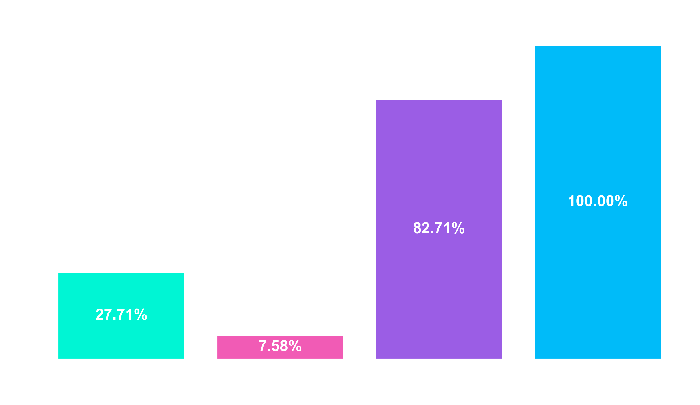
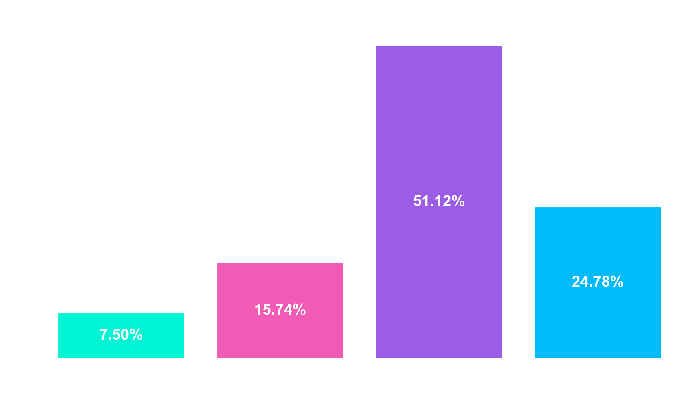
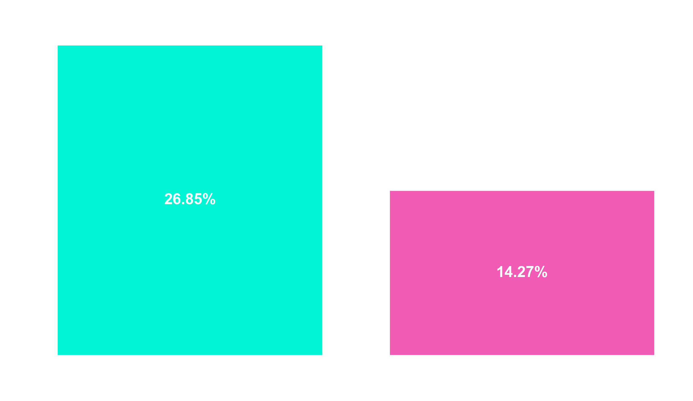

O Problema
O churn de clientes é um dos maiores desafios do setor bancário. Perder um cliente ativo custa significativamente mais do que reter um atual através de estratégias baseadas em dados.
O Dataset
Base de dados contendo score de crédito, localização geográfica, gênero, idade, saldo e número de produtos de 10.000 clientes bancários.
Principais Insights
Paradoxo do Número de Produtos
A análise revelou que clientes com 3 ou 4 produtos possuem uma taxa de churn drasticamente maior (100% no grupo de 4 produtos). Isso indica possíveis problemas em vendas casadas ou custos de manutenção acumulados.

Faixa Etária Crítica
Clientes entre 40 e 60 anos apresentam a maior taxa de evasão. Este insight sugere que o banco pode estar falhando em oferecer produtos de investimento ou previdência que façam sentido para este perfil de maturação financeira. A saída desses clientes causa uma queda de $75 milhões para o banco.

Atividade do Cliente
Em todas as análises, a inatividade é um fator que dobra as chances do cliente abandonar o banco. Ou seja, clientes que não movimentam suas contas são muito mais propensos a cancelar os serviços em qualquer segemento análisado, como faixa etária, país, produtos.

Conclusão & Estratégias
Revisão de Produtos
Auditar a jornada de clientes com múltiplos produtos para identificar atritos no suporte ou taxas abusivas.
Fidelização 40+
Campanhas de retenção focadas nesse grupo, com benefícios em taxas de corretagem ou seguros. Essa estratégia pode ser aplicada somente na França e Alemanha que concentram 75% desses clientes.
Alertas Antecipados
Utilizar a queda de saldo e inatividade como gatilho para o time de CS atuar antes da decisão final de cancelamento.